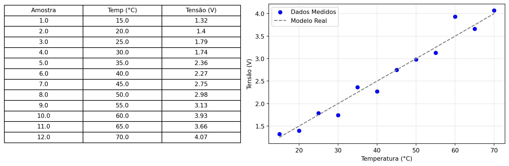
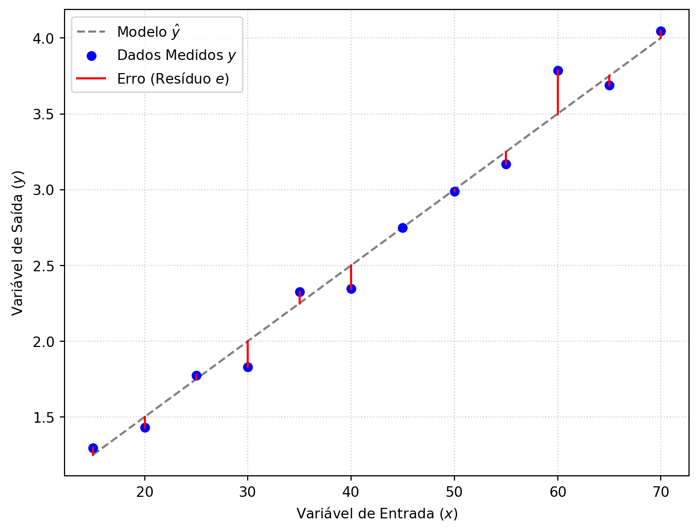
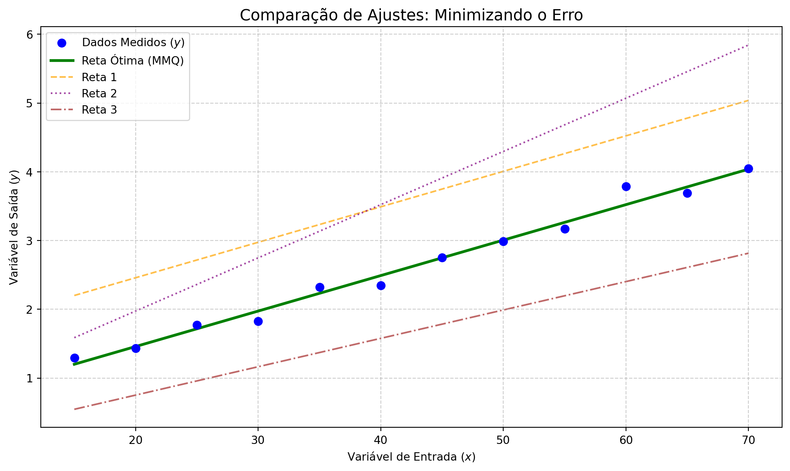
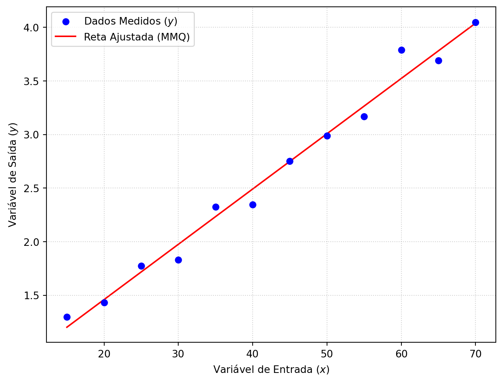

Identificação de Sistemas
Universidade Federal do Pará
Técnica estatística para modelar a relação entre variável medida e de saída:

Padrão sugere que uma reta (modelo) pode ser adequada para a relação:
\[V = \theta_1 T + \theta_0 + e\]
\(V\): Tensão medida; \(T\): Temperatura; \(\theta_i\): Parâmetros do modelo; \(e\): Erro aleatório.
Uma notação geral e simples para o modelo de reta é:
\[y = \theta_1 x + \theta_0 + e\]
Onde se convencionou \(y = V\) (variável dependente) e \(x = T\) (variável independente).
Aplicando os dados ao modelo, resulta no sistema de equações:
\[\begin{bmatrix} y_1 \\ y_2 \\ \vdots \\ y_n \end{bmatrix} = \begin{bmatrix} x_1 & 1 \\ x_2 & 1 \\ \vdots & \vdots \\ x_n & 1 \end{bmatrix} \begin{bmatrix} \theta_0 \\ \theta_1 \end{bmatrix} + \begin{bmatrix} e_1 \\ e_2 \\ \vdots \\ e_n \end{bmatrix}\]
Ou seja:
\[\mathbf{y} = \mathbf{A} \boldsymbol{\theta} + \mathbf{e}\]
Nesta notação vetorial-matricial, o modelo pode ser interpretado da seguinte forma:
\[\mathbf{y} = \mathbf{A} \boldsymbol{\theta} + \mathbf{e}\]
\(\mathbf{y} \in \mathbb{R}^{n \times 1}\): vetor de saídas observadas: \(\mathbf{y} = [y_1, y_2, \dots, y_n]^T\).
\(\mathbf{A} \in \mathbb{R}^{n \times 2}\): matriz de regressores, cada coluna é um termo do modelo.
\[\mathbf{A} = \begin{bmatrix} x_1 & 1 \\ x_2 & 1 \\ \vdots & \vdots \\ x_n & 1 \end{bmatrix}\]
\(\boldsymbol{\theta} \in \mathbb{R}^{2 \times 1}\): vetor de parâmetros \(\boldsymbol{\theta} = [\theta_1, \theta_0]^T\) a serem estimados.
\(\mathbf{e} \in \mathbb{R}^{n \times 1}\): vetor de erros aleatórios. \(\mathbf{e} = [e_1, e_2, \dots, e_n]^T\)
A partir de \(\mathbb{y} = \mathbf{A} \boldsymbol{\theta} + \mathbf{e}\), o erro pode ser expresso como: \[\mathbf{e} = \mathbf{y} - \mathbf{A} \boldsymbol{\theta}\]
O erro passa a ser função dos parâmetros \(\boldsymbol{\theta}\), já que \(\mathbf{y}\) e \(\mathbf{A}\) são conhecidos a partir dos dados medidos.
Cada escolha de \(\boldsymbol{\theta}\) gera um vetor de erros diferente.
A questão é: qual o melhor valor para \(\boldsymbol{\theta}\)?
Erros são a distância vertical entre os pontos medidos e a reta do modelo.

O erro residual para cada amostra \(i\) é a diferença entre o valor medido e o predito \(\hat{y}_i\) pelo modelo:
\[e_i = y_i - \hat{y}_i\]
É necessário definir uma métrica para quantificar o erro total do modelo. Isto é feito por uma função de custo \(J(\boldsymbol{\theta})\) que agrega os erros individuais \(e_i\).
\[J(\boldsymbol{\theta}) = \text{agregação dos } e_i\]
Uma soma de valores não seria adequada, pois erros positivos e negativos poderiam se cancelar.
Uma abordagem comum é utilizar a soma dos quadrados dos erros: \(J\) como a soma dos quadrados dos erros:
\[J(\boldsymbol{\theta}) = \sum_{i=1}^{n} e_i^2 = \sum_{i=1}^{n} [y_i - (\theta_1 x_i + \theta_0)]^2\]
Esta função \(J\) é chamada de função de custo ou função objetivo.
Para cada escolha de parâmetros \(\boldsymbol{\theta} = [\theta_0, \theta_1]^T\), calcula-se o valor da função de custo \(J(\boldsymbol{\theta})\).
Alguns exemplos de retas com diferentes parâmetros e seus respectivos erros:

Como o erro é dado por \(\mathbf{e} = \mathbf{y} - \mathbf{A} \boldsymbol{\theta}\), pode-se impor que o erro seja zero:
\[\mathbf{A} \boldsymbol{\theta} = \mathbf{y} \]
Se a matriz \(\mathbf{A}\) for quadrada e inversível, a solução direta \(\boldsymbol{\theta} = \mathbf{A}^{-1} \mathbf{y}\). Mas nos casos práticos \(\mathbf{A}\) não é quadrada. Neste caso pode-se aplicar \(\mathbf{A}^T\) em ambos os lados da equação: \[\mathbf{A}^T \mathbf{A} \boldsymbol{\theta} = \mathbf{A}^T \mathbf{y} \]
Se o produto \(\mathbf{A}^T \mathbf{A}\) for inversível então aplica-se esta inversa a ambos os lados:
\[(\mathbf{A}^T \mathbf{A})^{-1}(\mathbf{A}^T \mathbf{A})\boldsymbol{\theta} = (\mathbf{A}^T \mathbf{A})^{-1} \mathbf{A}^T \mathbf{y}\]
O que resulta em: \[\boldsymbol{\theta} = (\mathbf{A}^T \mathbf{A})^{-1} \mathbf{A}^T \mathbf{y}\]
Em python os dados podem ser gerados como:
A matriz de regressores \(\mathbf{A}\) é construída como:
Estimação de parâmetros por mínimos quadrados:
Intercepto (theta0): 0.4278
Inclinação (theta1): 0.0516O grafico comparativo:

Universidade Federal do Pará